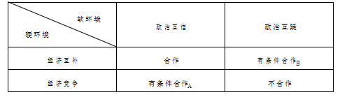
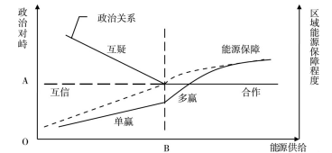

收录于合集

简 介
**
**
【作者简介】 朴光姬，中国社会科学院亚太与全球战略研究院研究员；郭霞，中国社会科学院亚太与全球战略研究院博士后；李芳，中国社会科学院亚洲太平洋研究系博士研究生
【期刊】 当代亚太 2018年第二期
【整理】 李逸成
【审核】 高嘉琳 庞林立
内 容 提 要
东北亚的资源分布和各国经济发展状况均具有进行能源互补型合作的条件，需要探索的是在缺乏政治互信的条件下，通过能源合作提升 区域能源安全的路径。文章从构建区域能源合作的理论框架切入，分别考察了欧盟和北美的区域能源合作机制建设过程，并以能源资源赋存、供求关系和政治互信这三个基础性条件入手，分析其各自的合作特点。在此基础上，进一步解读东北亚区域能源合作进展缓慢的症结。文章认为，“一带一路”倡议中的能源通道和基础设施建设，能缓解直至解决东北亚区域能源供给不足问题，而这些相对小范围的双边合作实际上是将区域能源合作进程在时间和空间上进行充分切割，以局部互信回避全局互疑，以拼图式的累积渐进到区域整体范围的合作，这为东北亚地区在缺乏政治互信条件下逐步开展区域能源合作提供了可行路径。
关 键 词
东北亚、能源合作、政治互疑、 “一带一路”倡议
** 一、问题的提出及相关研究综述**
能源是支撑社会经济正常运行的基础性物质，对于能源匮乏的国家来说，更是涉及国家经济安全乃至国家安全的战略性物资。东北亚地区既有能源赋存丰富的俄罗斯和蒙古，也有能源极度匮乏但需求巨大的日本和韩国，还有能源禀赋品种与消费品种不匹配且数量差距愈来愈大的中国。因而，从东北亚地区的角度看，各国间存在着具有强烈互补性的能源关系，发展区域能源合作有利于各方，是实现区域能源安全的重要途径。东北亚各国政府与学界对区域能源合作也进行了较深入的研究和探讨，不过，合作的实际进展却十分缓慢。
学界对于东北亚能源安全合作机制及合作进展缓慢原因的研究，主要是从地缘政治和区域经济的角度进行，研究方法多为以列举式分析对于合作有利与不利的因素，侧重于实践操作，具体来讲，主要涉及东北亚能源安全合作机制建立的可能性、必要性、合作的发展路径以及面临的主要问题等，而相关的理论研究并不多见。
对于东北亚能源合作的可能性，多数学者认为，基于东北亚地区能源供给国与需求国之间具有较强的互补性，俄罗斯可以通过能源发展战略大大增加向中国、日本、韩国和其他东北亚国家出口燃料能源的数量。“俄罗斯把中、日、韩作为本地区最主要的能源合作伙伴与三国希望俄成为本地区稳定的油气供给源，为在东北亚地区形成一个区域能源合作体系奠定了坚实的合作基础。”关于合作的必要性，由于能源生产国和消费国共存于世界石油市场，双方都无法单独保障本国的能源安全，同时，消费国之间又存在着竞争与合作，因此，能源安全合作既可以防止能源供给中断，也可以避免消费国之间为获得能源而恶性竞争。合作实现共赢，暗争带来互损，已经逐渐成为东北亚各国的共识。
对于东北亚能源合作的发展路径与前景，学界的普遍观点是需要建立适当的合作机制。各国应开展共同研究，协调相关政策，加强各国能源企业之间的合作。围绕东北亚各国的共同利益，对一时难以解决的问题搁置争端，从一些现实可行的合作做起，建立相应合作机制，逐步巩固并扩大合作。有学者认为，能源共同体是最具代表性的机制框架，并据此提出了包括组织协调体系、信息咨询体系、投资融资体系、生产储运体系以及共同市场体系在内的详细设计。也有学者提出了较具体的合作领域，如扩大东北亚区域内的能源贸易，建立石油应急储备体系，建设天然气管道以及开展节能、环保等方面的合作。
不过，东北亚能源合作的实际进程却一直踟蹰不前。其重要原因在于地区内复杂的地缘政治关系：东北亚国家具有不同的政治体制、经济体制以及意识形态；尽管冷战早已结束，但其对地区安全结构依然存在消极影响；国家之间存在悬而未决的历史问题和领土争端；区域意识薄弱、缺乏地区认同；此外，还深受美国因素的影响以及存在领导权竞争问题等。
中国于２０１３年提出的“一带一路”倡议将与沿线地区的能源合作作为重要内容之一，随后出现的一批相关研究认为，“一带一路”倡议为沿线地区的能源合作提供了更充分的可能性，实现的路径主要是能源输送通道建设与能源开发和产能合作，东北亚地区是其中重要的组成部分，合作的主要障碍仍是地区内基于历史、体制、战略格局等因素构成的复杂地缘政治关系。与之前关于东北亚能源合作研究的重要不同在于，这些研究基于“一带一路”的合作共赢基本理念和原则，对参与区域能源合作的基本思路有所调整，从偏重本国能源保障转向兼顾区域能源领域的共同利益与发展；从能源领域的发展转向兼顾社会经济更广泛领域的发展。支持这一思路调整的相关理论研究认为，区域能源合作是国家间的关系，因而合作必须保障各方的利益才能顺利推进。参与合作的各方大致可分为三类，即能源供给方、通道方以及需求方，各方的利益和优势不同但互补，由此构成合作的基础。不过，同类国家之间却可能是竞争关系，这是影响合作进展的重要障碍。综上所述，已有研究较充分地探讨了东北亚地区能源合作的可能性、必要性、合作领域以及机制，认为合作的主要障碍是复杂而缺乏互信的地缘政治关系。因此，需要解决的问题就转变为在合作主体间没有充分政治互信的现有条件下，如何缓解政治互疑，从而推动在能源这类具有战略意义的经济领域开展区域性合作。简言之，即如何在政治互疑的条件下开展东北亚区域能源合作，已有研究对此讨论并不深入。信任问题是当今国际政治中的一个重要研究领域，学界对国家间信任的理论探讨已有很多，但对于结合了国家间关系、区域组织的建立和发展方面的信任问题的实证研究不多，针对东北亚地区的信任问题的研究也较少，特别是针对地区内像能源这样的单一领域中遇到的政治互信与合作关系的研究更是罕见。本文将借鉴已有的国家间信任问题的研究成果与思路，分析东北亚区域内政治互信与能源合作的关系问题。
首先，信任是主体与客体之间的关系，单个行为体是无法形成信任的。在国际关系实践中，信任一般是双向的，由此产生互信（或互疑）。其次，信任的内涵由两个主要的元素———信心与承诺构成。应指出的是，实际上这也是信任产生的过程，即主体对客体的认知以及在此基础上的正向响应行为。主体对客体的认知一方面包括对客体行为的预测和对双方利益的变化结果的判断，而利益判断包括绝对利益、相对利益以及成本等；另一方面也有因相同或相似的社会、历史、文化、宗教和价值观等所带来的心理认同，这种认同也会影响主体对客体行为的预测与判断，尽管很难予以计量。若主体对未来的利益判断符合其可接受的预期水平，就可能采取正向的响应行为（包括接受、赞同、支持等），表现为对客体的信任；若未来利益判断不符合预期，主体就可能采取负向响应行为，表现为不信任（包括不接受、反对、破坏等）。
再次，信任的强度和范围是不断变化的，是一种变量，而不是一种常量。主客体在不同领域、不同范围、不同时期的实际利益和预期利益都有可能是不同的，因而影响利益判断的结果也是不同的，与预期水平相比，利益判断可能从负值转向正值，据此而产生的信任强度也会有相应的变化，从不信任逐步转向信任。
最后，信任强度与合作（制度化）水平可能是正相关关系。国际合作是指“国际行为主体之间基于相互利益的一致或部分一致而在一定的国际领域或双边关系中所进行的协调、联合行动乃至结盟或一体化”。可见，国际合作中相互的利益判断是基础，与之相应而生的信任则是可变的，国际合作的制度化水平也是递进的。高水平的合作应当有高强度的信任，例如，“正式的军事联盟是一种高制度化水平的国际合作”，它“必须建立在一定的信任基础之上”。
基于以上认识，本文拟从区域合作中的政治与经济关系角度出发构建简洁的分析框架，并依此考察欧盟和北美能源合作机制的建设过程与特点。在此基础上，重新梳理东北亚地区能源合作的条件、目标、路径与困难，进而深入解读“一带一路”倡议对东北亚能源合作的意义与作用，从而寻求在政治互疑条件下发展东北亚区域能源合作的基本路径。
** 二、区域能源合作分析框架**
影响区域能源合作的因素有很多，它们对能源合作的作用方向和程度等不尽相同，本文依其特性归类，重点分析其相互间的关系以及对区域能源合作发展走向的影响，并以此作为进一步分析区域能源合作的基本方法与思路。
（一）区域能源合作的基本目标与内涵
区域能源合作一般指若干国家共同在一定区域范围内就能源生产、运输和消费方面开展合作，并承担相互责任，确保区域能源市场的平衡。② 其基本目标一是在物质上确保区内能源市场的供求平衡，二是确保这种平衡的稳定性。这需要参与合作的各方通过一系列协议或协定等制度建构，在本区域内的能源领域形成较完整的制度规范体系。从区域能源安全的角度看，区域能源合作制度体系的基本含义一是合作各方在合作框架规范的领域和时间期限内，不能以能源作为打击或损害相互的经济安全以至国家安全的战略手段；二是为合作各方提供相对长期、稳定的能源供求制度保障环境，也包括在应对突发事件时的相互间沟通与协调。
因此，区域能源合作不仅要增加区内能源的供给或需求，更要构建保障区内能源供求关系稳定与发展的制度环境。显然，构建区域能源合作制度体系是政府间行为，这就需要政府间建立起相应的政治互信，互信的核心是达成不以能源作为损害其他合作方的战略手段的默契。
（二）区域能源合作的基础条件
１．区域自然资源赋存与分布
依据要素禀赋理论的观点，世界各国存在的要素禀赋差异是国际贸易产生的前提。区域能源贸易同样基于各国自然资源赋存与分布的不平衡性。如果区域内国家的自然资源赋存与分布差异大，就可形成互补的基础。互补意味着各国均有自身的比较优势，进而存在合作的可能与动力。如果区域内国家的自然资源赋存和分布差异小，则可能产生竞争。因此，资源禀赋差异是产生合作的基础性条件，而资源分布的地理位置、开发条件、品种和质量等则是影响合作的具体因素。
２．区域能源关系中的物质经济关系
区域能源经济关系包括能源的物质关系和制度关系。前者指区域内能源的生产、输送、消费等实物经济活动；后者指约束、规范能源物质活动的协议和协定等，实际上也是区域能源合作的重要内容与基本形式。
区域能源赋存条件是能源供给的物质基础，而实际供给能力则由经济发展水平支持的能源开发、加工和输送能力所决定。区域内的能源需求也是以经济发展水平为基础，区内处于工业化和后工业化阶段的国家是主要的能源需求方。当这些能源需求国自己能源供给不足时，若区内有较大的能源供给来源和较强的能源输送能力可以形成足够的实际供给能力，则可为区内提供实现互补型能源经济关系的物质基础；若区内能源实际供给远小于需求，需求方各国之间的竞争将成为区域竞争型能源经济关系的物质基础，区内的能源短缺须由区外市场进口解决。
３．区域政治和安全格局
区域内各国受各自政治、经济、社会、历史、宗教、文化和地缘等诸多因素的影响而形成了不同的国家间关系，这些关系构成了地区的政治以至战略安全格局。当区内国家在上述政治、经济等重要领域的政策或战略取得一定程度上的一致时，区域内就可能形成互信的政治安全格局；反之，当各国间因利益竞争甚至冲突而导致政策或战略不一致时，区内就可能形成互疑甚至对峙冲突的政治安全格局。
能源是具有战略意义的特殊商品，关系着国家经济与社会的发展，也相应会影响经济安全以至国家安全。因而，各国政府对跨国能源合作高度关注并深度介入，这就使区域内能源的国际合作开发与利用受到强烈的非经济因素影响。从这一角度看，区域内互信或互疑的政治安全格局是影响区域能源合作的最重要的非经济因素。
（三）区内政治经济关系对能源合作的影响
区域内能源的物质经济关系与政治安全格局大致构成了影响区域能源合作的“硬环境”与“软环境”。为便于考察它们对能源合作所产生的不同影响，本文将这两类环境因素简化为两种背景状态，即作为“硬环境”的能源物质经济关系可分为“经济互补”与“经济竞争”两种基础状态；作为“软环境”的政治安全关系可分为“政治互信”与“政治互疑”两种基础状态。
１．政治经济格局对区域能源合作的静态影响
区域内政治经济格局的两种基础状态对区域能源合作产生的影响如表１所示。
表１ 区域政治经济格局对区内能源合作的影响

若将区域能源合作作为希望实现的正向目标，则区域内能够出现基于政治互信和经济互补基础状态的能源合作就是比较理想的格局；而基于政治互疑和经济竞争基础状态的能源不合作自然是不理想格局。另外两种可接受的格局一是在经济竞争基础状态下，利用政治互信抑制能源经济竞争从而取得“有条件合作Ａ”，这里的条件就是政治互信；二是在政治互疑基础状态下，利用能源经济利益的互补弱化政治互疑的影响从而取得“有条件合作Ｂ”，条件是能源经济关系的互补。
显然，在既定基础状态下实现有条件合作是改变区域内不合作这种不理想格局的可选择途径和目标，这就需要分析和探讨不同基础状态下区域能源合作关系格局的转变条件、途径和方向等问题。
２．政治经济格局对区域能源合作的动态影响
上述从不合作向有条件合作转化的两个既定基础状态是经济竞争或政治互疑，当经济竞争作为既定基础状态时，需要调整变化的是区域的政治关系从互疑转为互信。具体来说，当区域内能源缺乏而使能源物质经济关系处于竞争基础状态时，若区域内政治关系能够从互疑转向互信，就有可能利用政治互信建立起有利的区域能源合作关系，以弱化甚至抑制能源竞争，使区域能源关系有可能从不合作转向“有条件合作Ａ”，一致对外获得能源供给（实例可参见下文对欧盟能源合作的分析）。而当政治互疑作为既定基础状态时，则要将区域的能源经济关系从竞争调整为互补。地区政治经济格局变化对区域能源合作的动态影响见图１。

图１ 区域政治经济格局对区内能源合作的动态影响
当区内能源供给不足，处于ＯＢ区间时，若各国之间的政治对峙处于较低的Ａ点，则有可能出现以保障区内能源体系稳定为目标的能源合作（即“有条件合作Ａ”）。但如果各国之间的政治对峙程度较高而处于互疑状态，则区内难以形成能源合作，区域性的能源保障程度位于较低水平，实际上，此时各国谋求相对独立地自行解决其能源供求关系的稳定，在供给短缺的条件下各国之间难免会产生竞争，而且在政治互疑条件下这种竞争难以由非经济渠道进行抑制。这种状态实际上是表１中政治互疑和经济竞争下的“不合作”格局。
不过，从动态过程看，如果区域能源供给逐步增长（即从Ｏ趋向Ｂ），即使这种增长是由个别国家而非区域内各国集体促成的，也能使地区整体的能源需求竞争相应下降，从而促成区域能源保障水平的上升。能源供给增长带来的实际利益以及区内能源竞争的相对下降有可能改变各方的预期利益判断，部分的合作参与方的预期利益是增长的，而未参与合作的其他国家则可能因恶性竞争导致预期利益下降，从而促进后者逐步接受区内的局部合作，这一过程将弱化区内政治互疑的强度，有利于各方形成局部或阶段性的、不以能源作为打击或损害相互经济安全的战略手段这一默契。也就是说，从收益、特别是相对利益的判断的角度看，当判断恶性竞争并不能带来预期的相对利益时，竞争者就可能选择放弃恶性竞争而转为接受现实，此时就达到了较低强度的信任。这一过程的逐步扩展，将有助于缓解区域政治互疑对能源合作的负面影响，推进区域能源合作，实现表１中的“有条件合作Ｂ”。
因此，在存在区域政治互疑的条件下，双边或局部等相对小规模能源合作的累积将有可能逐步引发区域内能源经济基础状态从竞争向互补转变，从而为实现区域能源的“有条件合作Ｂ”奠定经济基础。
（四）区域能源合作的路径与模式选择
１．能源合作的基本路径
依上述分析，区域能源关系欲从不合作走向合作，一条路径是先将区域政治安全关系从互疑转向互信，此时，建立信任所需的认知判断是基于相近的社会、文化、价值观等要素，在此互信基础上形成对本地区能源关系的合作共识并建构相应的区域能源合作制度体系，再根据本地区能源资源禀赋条件共同开发区内能源（当区内能源禀赋丰富时），或协调获得外部能源资源（当区内能源资源匮乏时），最终实现“有条件合作Ａ”。显然，从构建区域能源合作制度体系的角度看，区域内的政治互信是十分必要的，有了互信，即使资源匮乏也可能促成合作。
另一条路径是在缺乏政治互信的区域环境下，从提升区内能源资源的互补程度入手，降低竞争程度，其基础条件是区内具有能够满足巨大需求的丰富资源禀赋且地理分布不均衡（若区内资源匮乏且缺乏政治互信，则难以建立区域性的能源合作关系）。发展合作关系的基本进程首先是存在供求关系的国家进行双边合作，以开发能源或建立能源通道来提升供给能力，当然，合作的双方至少需要建立阶段性或局部的互信，即在合作的范围和期间内保证对合作项目的支持。这种局部互信产生的基础是双方对能源合作所产生的预期利益的判断，若双方预测利益将符合各自预期时，就可能采取正向行动支持合作。当区域内这种阶段性或局部的双边甚至多边合作逐步发展，基本满足各参与方对区域内能源关系的要求时，即区域能源物质关系基本上形成了互补型供求平衡时，就为区域能源合作制度体系的构建奠定了必要的经济基础。这种以相对小范围的合作累积进而达到区域范围合作的渐进过程，
可以说是区域能源合作的拼图式路径，其要点是将区域能源合作进程在时间和空间上进行充分切割，以局部互信回避全局互疑，从而逐步趋近区域整体的能源供求平衡与稳定。
２．能源合作的基本模式选择
依据在区域能源供求关系中所处的不同位置，区域内国家在处理相互间的能源关系时大致采取两种不同的模式。
在能源资源赋存或开发利用水平差异大的国家之间，能源合作体现的是互补型合作模式，具体来说，就是能源产出国和消费国之间寻求实现供求平衡，特别是当需求远大于供给能力时，双方合作的重要内容是扩大能源产出国的生产能力以及对外输送能力。
而在能源资源赋存或开发利用水平差异小的国家之间，能源合作体现的是竞争型合作模式，多为能源需求方之间或供给方之间的合作，其目标主要是抑制相互间的恶性竞争，取得对非合作方的一致立场。显然，如果相互间缺乏政治互信，这类旨在抑制恶性竞争的合作只能靠经济手段来促成，如前所述，竞争的预期相对收益下降应是重要的影响因素。
** ** 三、欧盟和北美区域能源合作案例分析****
欧盟和北美是区域能源合作重要且成功的案例，两个地区的共同点是都具有区域内的政治互信，不同点是欧盟是能源资源相对匮乏的地区而北美是资源禀赋丰富地区，二者实际能源合作的进程与模式与本文的分析框架基本吻合。
（一）欧盟的能源合作模式
作为一个区域性联盟，欧盟成员之间存在基本的政治互信，且大部分成员都是能源资源（特别是石油和天然气）匮乏国家，因而其区域能源合作的路径与模式基本上与表１中的“有条件合作Ａ”相符。
１．能源合作机制建设过程
欧盟能源合作机制建设可追溯至２０世纪５０年代。１９５１年４月１８日，比利时、联邦德国、法国、意大利、卢森堡和荷兰六国签署《欧洲煤钢共同体条约》，成员国同意在共同体内促进煤炭和钢铁的自由贸易。１９５７年３月２５日，煤钢共同体成员国签订《罗马条约》，决定设立欧洲经济共同体，将欧洲一体化扩展到一般性的经济合作，以实现商品、服务、劳务和资本在共同市场的自由流动，并执行统一的对外关税。《罗马条约》还决定设立欧洲原子能共同体，联合开发核能。７０年代石油危机爆发后，欧洲能源多元化转向核能和天然气，长距离天然气管道不断延伸，直至欧洲市场。１９９３年１１月１日，《马斯特里赫特条约》生效，欧盟正式诞生。多年来，欧盟一直在整合各成员国的能源政策，使其与欧盟总体能源政策一致。欧盟的主要机构中均设有能源部门，其中欧盟委员会的能源部门作用突出。
２０１４年５月，欧盟委员会发布了能源安全战略，旨在为欧洲经济发展和公民生活提供稳定且充裕的能源供应。２０１５年２月２５日，欧盟委员会提议有关设立能源联盟的战略框架。２０１５年３月２０日，欧盟领导人在峰会上决定设立能源联盟。能源联盟的设立标志着欧盟能源安全合作机制的完善，有利于欧洲在全球能源事务中发出一个声音，从而提升话语权。
２．特点分析
（１） 能源资源赋存不足。欧洲的能源资源赋存不足以支撑其经济增长，成为区域能源合作启动和发展的基础性条件。目前，欧盟５３％的能源依靠进口，年进口额达到４０００亿欧元，９４％的交通运输需要依靠石油产品，原油进口依赖度超过９０％，天然气的进口依赖度也达到６６％。从理论上说，在资源禀赋不足的情况下，单个国家向外寻求能源供应的效率要比合作更高。
（２） 需求方之间进行合作，共同对外以保障供给安全。欧盟区域能源合作主要是能源需求方之间的合作，其首要目标是为了应对能源资源供给不足，共同对外以保障供给安全。随着区域能源合作的发展和深化，合作范围已扩展到诸如能源对环境的影响等非传统安全领域，欧盟框架下的区域能源合作机制已呈现一体化趋势，成员国在传统能源合作领域共同对外，在新能源合作领域联合自强。
（３）政治互信，制度完备，可以抑制相互之间的竞争。作为能源需求方之间的竞争型合作，抑制恶性竞争是其面临的主要挑战，在能源供给不足之时尤其如此。在欧盟能源合作的进程中，逐步形成了共同对外的重要共识，用一个声音与区域外能源生产国对话。欧盟国家在政治制度方面差异较小，具有相似的价值观，国家之间的经贸、外交、安全及军事关系均呈现稳定状态，因而具有较强的政治互信，能够建立区内较为统一的能源政策体系。
１９８３年１１月，欧共体能源部长理事会第一次授予共同体制定独立的能源政策的权限。１９８８年５月，欧委会推出了题为《能源共同市场》的报告。委员会设想的欧共体内部能源政策的基本思路是通过建立统一的能源市场，确保能源供应安全，克服成员国各自为政的“能源民族主义倾向”。为此，欧盟通过持续不断的立法，要求各成员国开放能源市场，采用相同的技术标准、管理规则和技术规范，实现电力和天然气管网的跨国连接等。内部市场的建设为日后的能源外交奠定了制度基础和市场依托。
（二）北美能源合作模式
北美的美加墨三国之间存在基本的政治互信，也都有丰富的能源资源禀赋，支撑北美区域能源合作的重要因素是三国之间在经济规模和发展水平上的巨大差异，使三国没有因都有丰富的能源资源而产生竞争，反而形成了互补型的能源经济关系，实现了表１中的区内能源合作。
１．能源合作机制建设过程
北美能源合作过程相对简单。美加墨三国签署自由贸易协定，推动能源贸易与投资，促进能源关系的日益紧密，能源合作机制随之水到渠成。实际上，最初的北美自由贸易协定也是以美加自由贸易协定为文本参照而签署的，两个自贸协定均将能源贸易列在专门的章节中。美加自由贸易协定的第九章规定了能源产品贸易规则，其中详细界定了两国能源供应数量的可持续和价格的稳定性。尽管两国政府对能源贸易的干预一直存在，但是美加自由贸易协定中的能源产品贸易规则基本实现了两国的基本诉求———即美国寻求稳定的能源供应，而加拿大需要稳定的能源出口市场。基于此，在完善相关文本的基础上，在北美自由贸易协定的第二部分货物贸易中的第六章，规定了能源和基本石化产品的贸易与投资条款。该条款禁止成员国采取任何限
制能源自由贸易的措施（如采取数量限制），保障区域内能源与基本石化产品的自由贸易，保障了能源供应的稳定性，同时，作为石油净输出国的加拿大和墨西哥也获得了相应保障，能够以公平的价格长期供应美国市场，从而获得稳定的贸易收益。
在自由贸易协定之下，北美能源合作日益紧密化。２０１４年１２月，美国、加拿大和墨西哥签订了能源信息合作的三方谅解备忘录，创设了三国之间能源合作的一个制度性框架。借助此框架，成员之间可实现磋商和公开信息的共享，并推进现有的信息改进和北美地区能源展望方面的对话、合作以及成果发布。
２．特点分析
（１） 能源资源充足，各国之间存在巨大的发展水平与规模差异。在美加墨三国组成的北美能源合作区域内，能源资源赋存充足，其中，加拿大是石油和天然气的主要储藏国，墨西哥的石油储量也比较丰富，但天然气需要从美国进口。作为发达国家，美国及加拿大具有先进的石油勘探和开采技术，墨西哥则备受炼油能力和能源基础设施不足等因素的困扰。美国的页岩气开发模式已成为加拿大和墨西哥页岩气开发的重要参考和借鉴。总之，在区域能源合作中，三国之间资源禀赋、经济发展水平与规模的差异成为各自角色定位的基础性条件。
（２） 供需双方之间进行合作，保障区域内能源供求的平衡与稳定。以互补为基础的北美能源合作，主要通过经济手段保障区域内能源供求的平衡与稳定。加拿大和墨西哥一直担当着美国首要的原油供应国角色，墨西哥从美国进口石油炼化产品，美国和加拿大通过统一电网共享电力。美加已成为彼此最重要的能源贸易伙伴，美墨之间也是如此。三国借助能源贸易中供需双方的互动，保障区域能源供求的平衡与稳定。
（３） 政治互信，制度完备，保证在常态下的稳定供求。美加墨三国外交关系稳定，基本不存在政治互疑问题，能源合作具有良好的政治基础。在经济关系上，北美自由贸易协定等制度性框架强化了地区经贸联系，促进了各国能源贸易关系的迅速发展，国家层面的能源合作水到渠成。在美加墨三国的能源合作中，能源生产国和能源消费国之间的政治互信和完善的制度性框架保证了常态下能源的稳定供应。
** ** 四、东北亚区域能源合作与“一带一路”倡议****
从区域角度看，东北亚地区处于能源领域的“不合作”状态，区域内缺乏合作所需的政治互信，但东北亚有能源供给潜力，也有巨大的能源需求市场，不断发展的双边合作正在提升区域内能源的实际供给，这就使东北亚有可能在政治互疑条件下，通过拼图式的相对小范围的能源合作达到区域能源合作，以促进能源的供求平衡。中国“一带一路”倡议的灵活合作原则和方式恰可为这种相对小范围或局部的能源合作提供支持。
（一）东北亚区域能源合作的条件
１．区域的界定
东北亚是世界上经济发展最快的区域之一，也是全球能源需求较大的地区之一。以石油为代表的能源是经济发展的“血液”，东北亚的区域经济发展亟待解决能源制约的瓶颈。而实践证明，任何一个国家都无法单独解决其能源需求问题，能源合作已经成为各国的共识。
２．不均衡分布的能源资源是重要的互补基础
俄蒙两国的能源资源赋存丰富，国内能源消费低于能源生产，具有很大的出口潜力。尤其俄罗斯是世界第二大石油生产国，占全球总产量的１２．６％，同时也是第二大原油出口国。天然气产量也居世界第二位。蒙古的铁矿和煤炭资源储量丰富。另外，朝鲜的矿产品种丰富。中日韩三国的能源资源赋存相对较低，供需矛盾突出，需要从国外大量进口。中日分别是世界第二和第三大原油进口国。日韩中分别是全球液化天然气进口量排名前三位的国家。尤其中国已成为全球能源消费的第一大国。能源在各国之间分布的差异性，成为互补型合作构建的基础。
３．发展水平与经济规模差距较大，有互补的基础
经济发展水平与规模也是东北亚地区开展能源合作的基础性条件。不同的经济发展水平具有不同的能源消费结构和能源开发实力，经济规模的大小影响着能源消费的数量。东北亚地区的六个国家中，既有发达国家，如日韩，也有发展中国家，如中俄蒙朝，各国间经济发展水平差距较大。不仅如此，东北亚地区国家之间的经济规模也存在较大差异，中日分别是世界第二和第三大经济体，对能源的有效需求数量巨大。较大差异的存在，也构成了互补型能源合作构建的基础。
４．国际关系存在对峙，缺乏互信，未建立起区域性制度安排
大国博弈的长期存在是东北亚地缘政治的鲜明特色。进入２１世纪以来，伴随着中国的迅速崛起，日本日益担忧其在亚洲的核心地位，俄罗斯意图重新掌控自己在东北亚的传统势力范围，域外的美国在东北亚一直具有强烈的存在感。可以说，大国博弈加剧了东北亚地区的能源紧张。能源领域的竞争与互疑外溢到战略竞争层面，加剧了主要国家之间政治和战略关系的紧张；战略紧张又反过来激化了各国对能源的竞争与争夺，阻碍了国家之间保障能源安全的共同合作。加之东北亚多个国家之间本就存在历史及领土主权问题，这进一步降低了相关国家之间的政治互信，离散了区域能源合作的向心力。因而，尽管多年前就有人提出过东北亚能源合作机制的建议或倡议，但至今还未形成区域性的制度安排。
（二）合作目标与困难
１．东北亚区域能源合作目标
区域能源合作通过实现能源供给的平衡与稳定，进而保障能源安全。能源资源赋存以及经济发展和规模的巨大差异，是东北亚地区开展区域能源合作的基础性条件。建立在差异化基础上的互补型能源合作有利于实现能源市场的供求平衡。能源安全对于能源生产国和消费国具有不同的意义。对于俄罗斯来说，能源安全意味着以保障盈利的价格获得稳定的能源需求市场；对于中日韩来说，能源安全则意味着以合理的价格获得稳定的能源供应。需要注意的是，在东北亚地区，能源进出口对一国的经济具有举足轻重的影响，能源商品的战略属性更加突出。为保障和提升能源安全，各国也倾向于利用诸如能源外交等非经济手段。
从地区整体看，中日韩等国家对区域内能源的需求远大于俄蒙等国家对区域内能源的供给能力，因而供给方在区域能源供求关系中居有利地位，需求方则因区内供给不足而处于相互竞争状态。这种供求关系使区内各个供求双边之间的合作易于促成，实际上这类合作已在逐步推进，而包括需求各方在内的多边实质性能源合作则难以展开。
２．已有合作进程
东北亚尚未建立起覆盖全区域、专门性的能源合作机制。在能源合作的进程中，双边合作发展较快，多边合作则相对滞后。
（１）双边能源合作进程。中俄分别是东北亚地区最大的能源消费国和出口国，能源合作互补性强。２００４年１０月，两国签署《中俄联合声明》，明确推进双方在能源领域的合作。２００８年５月，双方确定建立副总理级能源合作协调机制，每年定期举行双边会晤。近年来，两国的油气资源合作发展迅速，合作领域不断深化。中俄石油管道项目合作开辟了能源运输的新途径。
２０１１年１月，中国通过贷款换石油的方式与俄方签署的中俄原油管道一线（“泰纳线”的中国支线）正式投入运行，作为首条由俄罗斯远东进入中国大庆的石油管道，年输油量在２０年合同期内将达到１５００万吨。２０１３年６月，中石油与俄石油签署增供原油贸易合同。计划自２０１８年１月起，建设自黑龙江省漠河，途经黑龙江、内蒙古，止于黑龙江省大庆市的中俄原油管道二线，向中国每年增供原油１５００万吨，目前二线管道建设已经过半。天然气贸易也是近年来中俄能源合作的重点领域。２０１４年５月，俄天然气工业公司与中石油签署３０年期供气合同，合同规定俄罗斯通过东线管道（西伯利亚输气管道）对华输气。计划于２０１８年开始供气，前五年供气量为５０亿立方米至３００亿立方米，第六年起将增至每年３８０亿立方米。除了以油气等为主的传统能源，中俄还在水电等可再生能源领域开拓合作空间。与此同时，双方的能源合作向产业链的两端拓展，例如，中俄就共同开发中国的地下储存天然气和进行天然气发电签署备忘录。中国参与俄罗斯资源的勘探及新项目的开发与融资，俄罗斯参与中国的石油炼化和销售。
日俄在石油、天然气及核能等重点领域均有合作。日本主要利用资金和技术参与俄罗斯的油气资源勘探和开采，并获得价格较低的油气资源。在核能领域，日本也有一定的技术优势。２０１１年３月，由地震引发的福岛核泄漏事故发生后，日本从俄罗斯进口石油的数量增长较快。２０１２年，日本从俄进口石油９５４．８万吨，２０１３年增至１２８６．７万吨。日本从俄罗斯进口的石油主要来自东西伯利亚—太平洋运输管道（“泰纳线”）。另外，日本通过参与俄罗斯萨哈林一期和二期项目获得长期的油气资源供应。目前，日俄双方正在推进能源合作项目，如三井物产、三菱商事与俄罗斯天然气公司（Ｇａｚｐｒｏｍ）将在萨哈林二期合建新的天然气液化处理设施。日本石油天然气金属矿物资源机构（ＪＯＧＭＥＣ）和丸红株式会社将与俄罗斯石油公司就勘探石油和天然气问题开展合作。日本的多家大型金融机构将对俄罗斯天然气公司提供融资协调，两国企业将在北极圈内进行尚在计划阶段的油气田开发合作等。
韩俄的能源合作与中俄及日俄能源合作具有相似之处。俄罗斯拥有丰富的油气资源，韩国拥有石油炼化技术、能源运输以及能源项目管理等方面的优势，但双方历经多次波折，直到近几年才取得实质性进展。与中日相比，韩国从俄罗斯进口的油气数量相对较少。以２０１３年为例，中日从俄罗斯进口的石油分别为２４３４．８万吨和１２８６．７万吨，韩国则为５４４．１万吨。另外，韩国从俄罗斯进口的均为液化天然气，需依靠海运油轮运输，数量有限且成本较高。随着韩国天然气需求量的快速增长，两国之间的管道天然气合作势在必行，然而，由于管道过境问题的限制导致合作进展缓慢。此外，韩俄在能源产业链下游的石油炼化、电力联网及核能领域也有合作。
（２）主要的多边能源合作。朝鲜处于相对封闭的状态，其他东北亚国家则参与了多个全球或区域性的能源组织或机制，但东北亚地区尚未建立起覆盖全区域的专门的能源合作机制。现有的仅限于东北亚地区的能源合作机制较少，其中比较有代表性的是中日韩合作、大图们江倡议以及东北亚天然气与管道论坛。前两者均是综合性的官方合作机制，后者则是关注天然气领域的民间机制。实际上，这类多边能源合作机制的实质性进展很小，主要功能是进行论坛研讨和提出政策建议。
１９９９年１１月，在出席东盟与中日韩（“１０＋３”）领导人会议期间，中日韩三国领导人启动了三方在“１０＋３”框架内的合作。自２００７年４月起，三国每年定期召开“１０＋３”框架下的能源部长会议。在２００４年１１月发布的《中日韩三国合作行动战略》关于能源的合作中写道，三国认识到提高能效与节能的重要性，将在促进地区能源安全方面加强合作，将通过现有及发展中的渠道进行能源战略对话。从２００８年１２月起，三国开始独立于“１０＋３”框架召开领导人会议。２０１５年１１月，第六次中日韩领导人会议重申了三国开展能源合作对实现东北亚可持续发展和共同繁荣的必要性。
大图们江倡议是联合国开发计划署支持的合作项目，是由中国、蒙古、韩国和俄罗斯四国政府于１９９５年所设立的副部级区域合作机制。该倡议涵盖中朝俄三国边境，韩国东海沿岸及蒙古的东部地区。该机制下设能源委员会，并将能源作为首要合作领域之一，主要目标是寻求在成员国政府的能源部门层面建立协商和政策支持的制度性框架。具体分为三个层面：促进能源政策的协调与合作；在大图们江区域减少能源贸易与投资的无形壁垒；促进成员国之间的能源信息交换。在２０１２～２０１５年的大图们江战略行动计划中确立的能源合作领域的行动主要有：将能源委员会发展为区域能源政策协调与合作的有效机制；通过设立区域能源论坛，构建包括政府、私人部门、智库和金融机构等各方在内的合作网络；通过组织相关的教育与培训项目，联合研究与研讨会，提升能源行业相关人员的业务能力建设；减少体制中的无形壁垒，提升透明度；开发大图们江地区能源资源数据库，实现区域利益相关方的信息共享。
东北亚天然气与管道论坛是一个涉及具体能源领域的合作机制，于１９９７年１１月由中、日、韩三国在第三届东北亚天然气国际会议期间发起，包括俄、蒙在内的五国相关机构组成的非营利性组织，致力于推动天然气管道的全球网络建设。截至目前，已经举办了十四届论坛会议。这一论坛对于促进东北亚地区的天然气利用和管网建设具有重要意义。
３．问题与困难
-
需求方的恶意竞争。中日韩是东北亚地区的主要能源需求国，在拓宽能源供应渠道，确保能源安全的战略中，取得区域内的能源供给无疑具有 “近水楼台先得月”式的优势。然而，在获取区域内能源供应的过程中，东北亚的能源需求国之间形成了明显的竞争关系，而且这种激烈的竞争常演化为恶意竞争。“安大线”与“安纳线”之争就是典型案例。２００１年９月，中俄确定建设从西伯利亚的伊尔库茨克到大庆的“安大线”石油运输管道。在 “安大线”的筹建过程中，日本向俄罗斯提出建设终点在俄远东港口纳霍德卡的“安纳线”，并承诺给予俄方５０亿美元的修建费用和提供全部贷款等优惠条件。日本的恶意介入，导致“安大线”和“安纳线”均被否定。历经波折后，俄罗斯确定了保证自身利益最大化的“泰纳线”。
（三）“一带一路”倡议与东北亚能源合作
中国正在逐步推进“一带一路”建设。“一带一路”倡议是以运输通道为纽带，以互联互通为基础，以多元化合作机制为特征，以打造“命运共同体”为目标的新型区域经济合作机制。将“一带一路”建设与东北亚能源合作紧密结合，意味着可以利用“一带一路”所倡导的以基础设施为载体的运输通道及互联互通建设，同时借助其多元化的合作机制，为东北亚能源合作提供进一步发展的可能。
１．东北亚能源合作的基本路径
从上述东北亚区域的能源相关条件看，其能源合作的发展方向基本上与表１中的“有条件合作Ｂ”的路径吻合。东北亚具有巨大的能源资源供给潜力，也有巨大的能源实际消费能力，因而已具备发展能源互补关系的条件，不足之处在于区域内存在严重而难以消除的政治互疑。不过，主要的政治互疑存在于中日韩等需求方之间，具有互补关系的国家之间在目前阶段并不存在如需求方之间那么严重的政治互疑。
中俄之间互补型的双边能源合作是在东北亚地区存在政治互疑背景下开展区域内局部能源合作的重要进展，而日本在“安纳线”问题上进行的恶意竞争应是与中国的相对利益的比较后做出的决定，其显然认为中俄合作对日本是不利的，因而采取了恶性竞争这种负向行为，表明对中俄能源合作的不信任态度。不过，随着中国实力的迅速上升和中俄能源合作的持续进展，日本已基本上不具备进行恶意竞争等破坏性行为的实力，逐步接受了以中俄能源合作为代表的东北亚地区内能源局部合作的发展进程，尽管这种接受可能是不情愿的，但实际上已表明在地区能源领域出现了形成低强度互信的可能。而不采取恶意竞争等破坏性行为本身已接近前述区域能源合作的内涵，即不以能源作为打击或损害相互的经济安全以至国家安全的战略手段。
因此，本文所提出的区域能源合作分析框架中的“有条件合作Ｂ”很可能成为东北亚区域能源合作的发展路径。显然，这一路径要求区域内小范围或局部的合作有充分的发展，全区域能源领域的机制化合作在此基础上才可逐步建立。在这一过程中，各国的参与程度会有较大差异，不会是同步进行的，中俄蒙之间的合作发展将较快，日韩参与的过程将会是较滞后的；而 “一带一路”倡议所展示的多元与宽松的合作形式可以为区域内的局部能源合作提供较好的支持。
２．“一带一路”倡议的重要功能是包括通道和基础产业在内的基础设施建设，因而有可能缓解甚至解决地区能源供给不足的问题
“一带一路”倡议的重要功能是基础设施建设。基础设施互联互通是 “一带一路”建设的优先领域，主要包括通道建设和基础产业。通道建设可以提升道路通达水平，实现国际运输便利化。作为需要大宗运输能力的商品，输油、输气管道和输电通道等能源基础设施直接影响能源供给水平。在基础产业领域，则要加大煤炭、油气、金属矿产等传统能源资源的勘探开发合作，积极推动水电、核电、风电、太阳能等清洁、可再生能源合作，推进能源资源就地就近加工转化合作，形成能源资源合作上下游一体化产业链。
在东北亚能源赋存丰富的国家，基础设施的陈旧和不完善制约着其经济发展和对外能源贸易与合作。以蒙古为例。虽然其煤炭资源赋存高，且煤电的９６％用于发电，然而其国内电力基础设施建设和配套较为陈旧，大部分仍沿用苏联时期建造的发电机组设备，许多发电站已有４０年以上的历史，发电设备老化现象严重。目前蒙古国尚无法满足本国电力的自给自足，部分电力需从中国和俄罗斯进口。“一带一路”倡议将基础设施建设作为合作的重点之一，适应了这些国家经济发展的需要。而且，基础设施建设中的互联互通，也可完善东北亚能源合作中的跨境油气管网和电网等基础设施的建设，从而促进能源贸易与投资合作。在基础产业领域，中国具有强大的能源勘测技术和工程施工能力，日韩在石油炼化和新能源技术方面具有优势，可与蒙俄朝能源产业对接，形成全产业链型的合作。总之，在“一带一路”倡议中，借助基础设施互联互通和基础产业合作，东北亚能源供给不足的问题有可能得到缓解甚至解决，而区域能源供给能力的提升有可能缓解能源需求方之间的竞争，有利于区域能源合作的发展。
３．“一带一路”倡议没有明确的机制化限制，可双边、多边参与，实现区域内局部合作
“一带一路”倡议没有明确的机制化限制，是一个多元化的区域合作机制，其特征是开放性和包容性，因而能够与现有的区域合作机制实现精准对接，也能够根据合作的实际情况，灵活采取双边或多边等形式，创造区域内的局部合作机制。
以东北亚天然气管道建设项目为例。２００６年３月，根据《从俄罗斯向中国供应天然气的会谈纪要》，中俄开启天然气贸易，计划修建东西两条天然气管道。２０１４年５月，中石油与俄天然气公司签署《中俄东线供气购销合同》。根据合同，从２０１８年起，俄罗斯通过东线天然气管道向中国供气，供气量逐年增加，最终达到每年３８０亿立方米。２０１４年９月，俄罗斯境内段 “西伯利亚力量”管道开始建设。２０１５年６月，中国境内段开始建设，从黑龙江省黑河市，经黑龙江、吉林、内蒙古、辽宁、河北、天津、山东、江苏、上海等省（区）市。２０１５年１１月，中俄两国在能源合作委员会第十二次会议上商定，推进东线天然气管道建设与西线天然气和亚马尔液化天然气项目。目前，中俄东线天然气管道项目正在按计划施工。中俄达成东线天然气合作，修建东线管道，为向韩国输送天然气提供了可能。俄罗斯的天然气接入中国境内后，可经朝鲜或山东的黄海海底输送至韩国，困扰多年的韩俄天然气输送管道问题有可能得到解决。由此，中俄之间的天然气合作可以扩展为中俄韩三边合作。这一合作形式一旦达成，可能会吸引作为天然气第一消费大国的日本加入，更进一步，中俄韩日的合作将为建立亚洲天然气交易中心和设立天然气定价体系打下基础。
２０１６年９月，中蒙俄三国发布《建设中蒙俄经济走廊规划纲要》，以对接“丝绸之路经济带”、欧亚经济联盟以及“草原之路”倡议为目标，标志着“一带一路”框架下第一个多边合作规划纲领即将启动实施。在中蒙俄经济走廊建设中，能源是重要合作领域之一，主要从两方面促进中蒙俄三边能源合作，一是完善交通基础设施建设及互联互通，二是促进能源领域的产能与投资合作。完善的能源基础设施和运输通道是能源贸易与投资持续发展的前提之一。投资建设或完善能源基础设施，需要投入大量资金。在“一带一路”框架下，可借助现有的“丝路基金”及亚洲基础设施投资银行等融资平台，吸引更多私人资本参与投资。在能源领域的产能与投资方面，应加强在电力和可再生能源领域的合作，以促进在成员国之间实现相关产业的协同发展，形成区域性联系紧密的能源生产、加工及运输体系。构建能源产业体系将有助于深化体系内参与方之间的相互依赖，为可能的能源合作创造条件。在中蒙俄经济走廊建设中，能源基础设施的完善和互联互通的发展，能源产业产能合作与投资的增长，都将起到贸易创造的效应，能够促进能源贸易的增长，进而促进区域合作的发展。未来中蒙俄经济走廊可能吸引日韩的参与，进而有可能实现多边合作向区域合作的转变。
** ** 五、结语****
依本文提出的区域能源合作理论分析框架，区域自然资源赋存与分布、区域能源物质经济关系发展水平以及区域政治和安全格局，是区域能源合作的基础性条件。欧盟国家的资源赋存和经济发展状况差异性较小，虽然缺乏进行互补型合作的基础，但是其成员国之间以条约形式构建政治互信的基础，推动区域能源合作。北美国家的资源赋存和经济发展具有互补性，同时具有利于区域能源合作的政治互信环境，使其区域能源合作发展较为顺利。东北亚国家在资源赋存与经济发展方面具有较大差异性，这是发展互补型能源合作的有利条件。然而，能源供给国的实际供给能力相对较弱，不足以有效抑制区域内的能源需求竞争，加之区域内国家之间缺乏政治互信，这些因素使东北亚能源关系处于不合作状态。中国提出的“一带一路”倡议中的能源通道和基础产业建设，有可能缓解甚至解决东北亚区域能源供给不足问题。而“一带一路”倡议中的灵活合作方式可以从相对小范围展开合作，将区域能源合作进程在时间和空间上进行充分切割，以局部互信回避全局互疑，以拼图式的累积渐进到区域范围的合作，这为东北亚地区在缺乏政治互信的条件下逐步开展区域能源合作提供了可行的路径。本文提出的政治互疑条件下开展东北亚能源合作的路径，实际上也是区内各国正在实施的以双边为主的合作实践。同时在对现有进程进行理论梳理和探讨的基础上，力求对东北亚能源合作的未来发展方向获得更清晰的认识。
声明
此文为国政学人微信公众平台外文编译系列文章之一，由国政学人编辑首发，不代表本平台观点。欢迎转发分享，未经授权谢绝转载。如有问题，请联系guozhengxueren@163.com
更多阅读
国政学人 （ID：guozhengxueren)
为方便学人及时阅读高质量文章
别忘把国政学人设置 星标 哦~